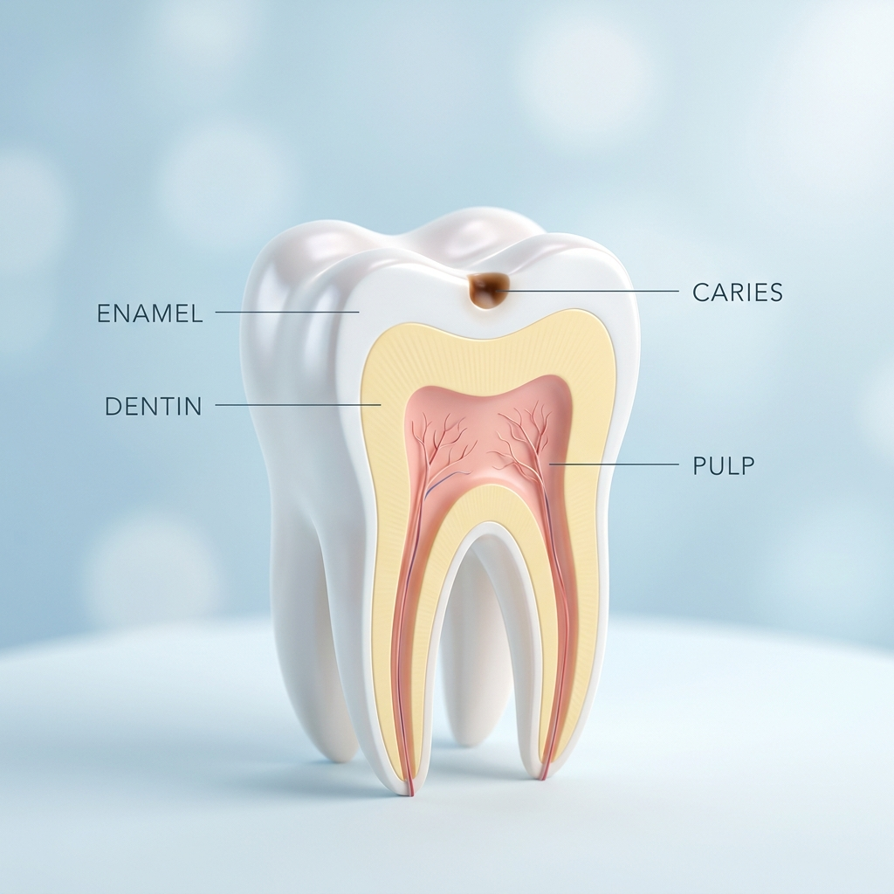
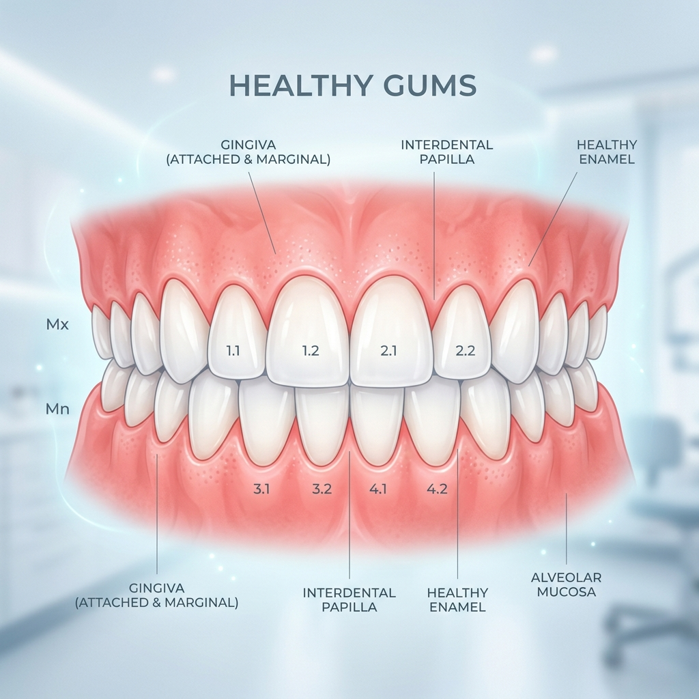
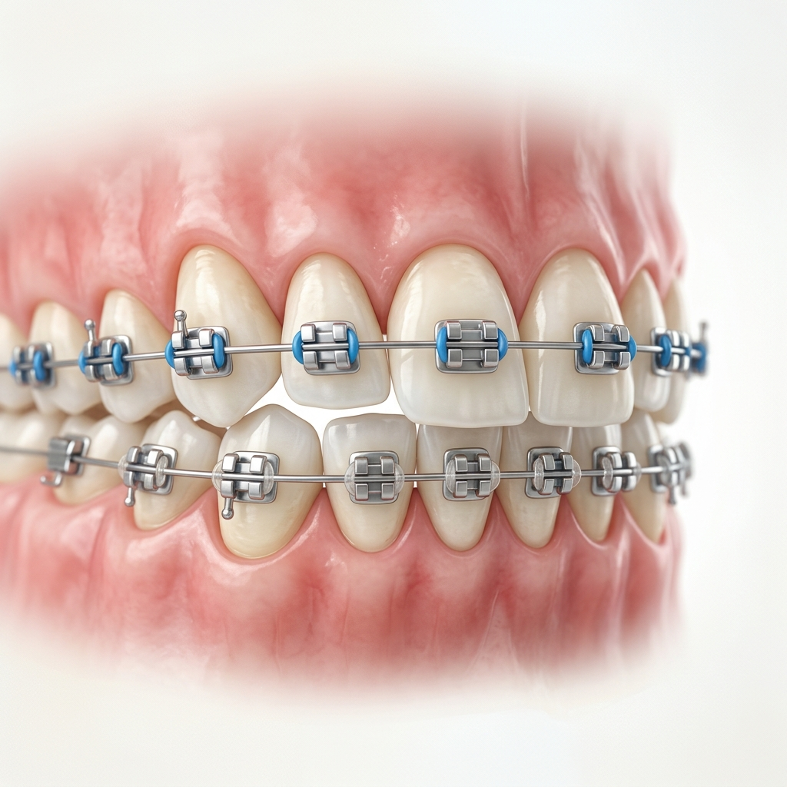
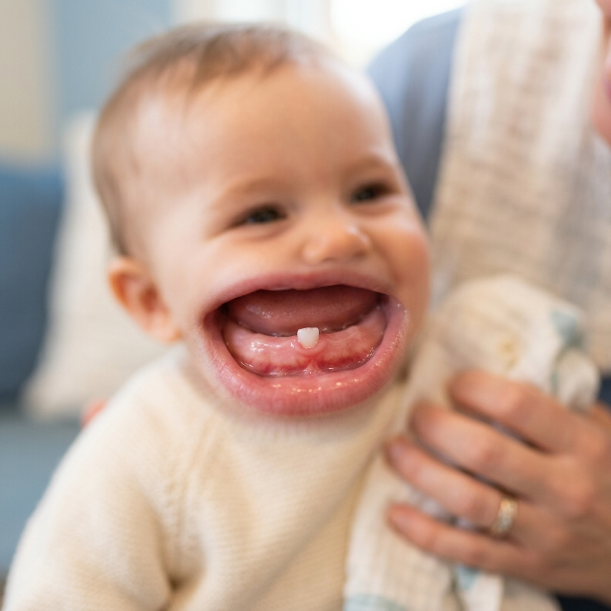
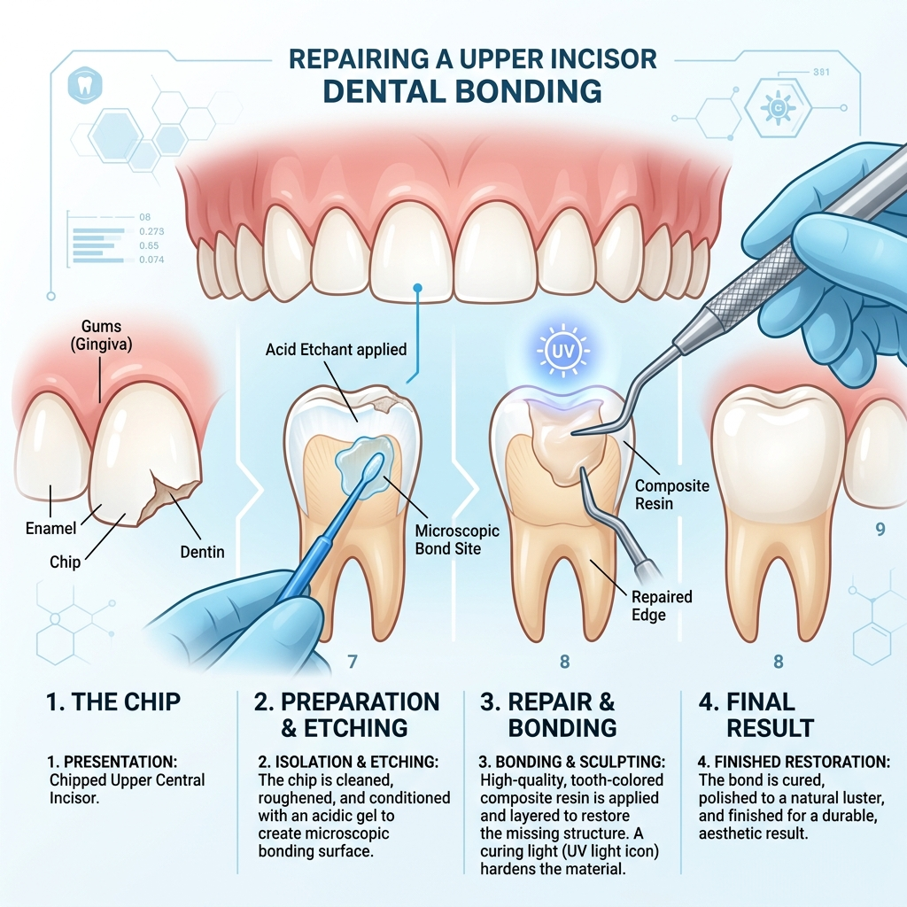
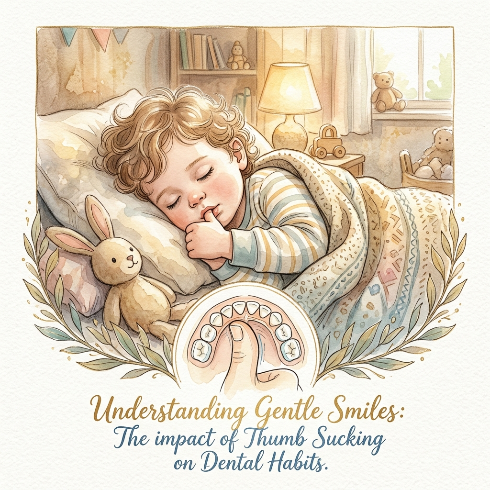
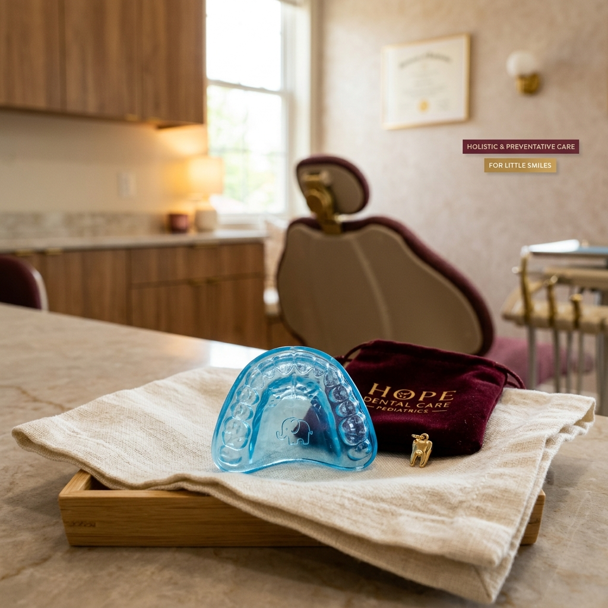
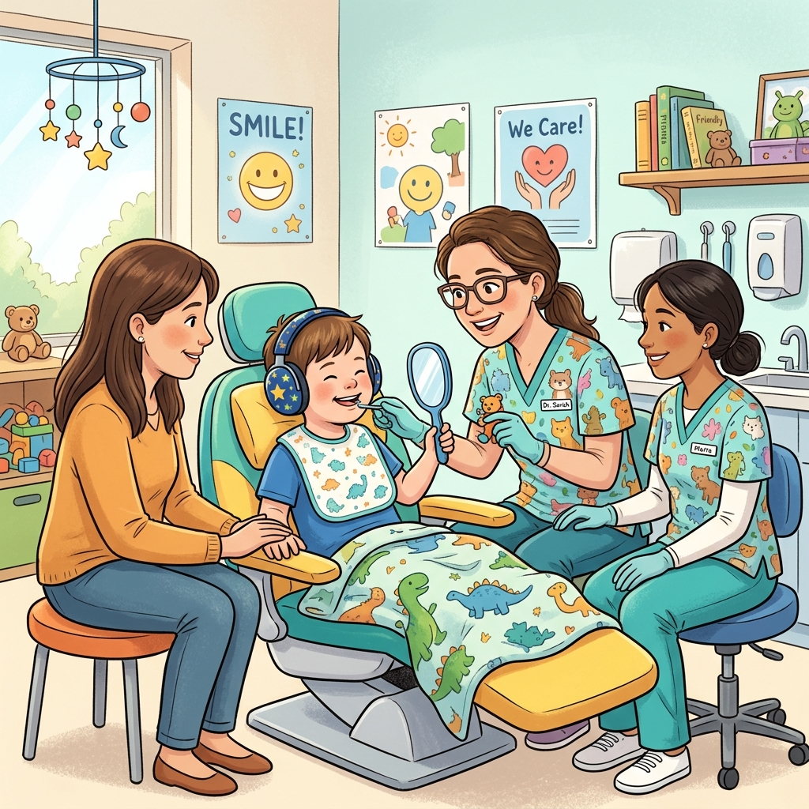
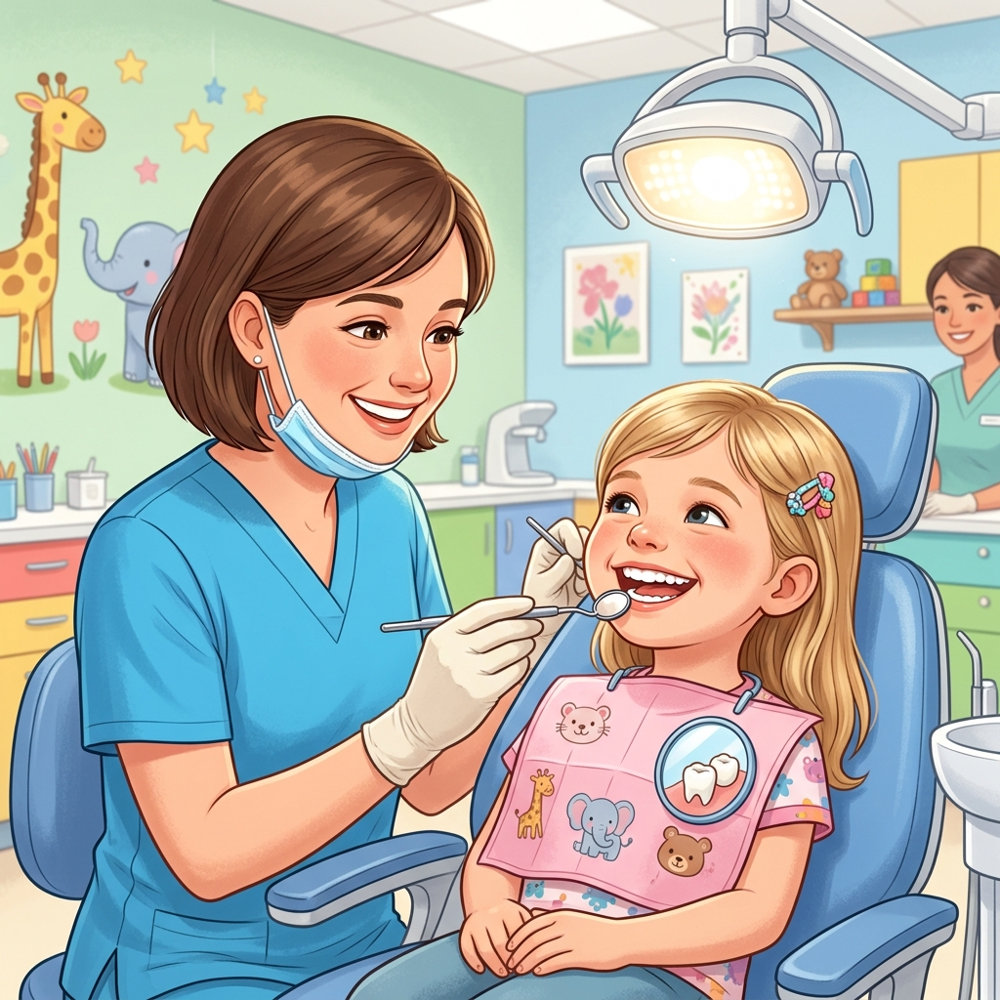

Pediatric Dentistry
Ensuring a lifetime of healthy smiles through gentle, specialized care from infancy through adolescence — designed specifically for your child's comfort.
What is Kids / Pediatric Dentistry?
Pediatric dentistry focuses on the dental health of children from infancy through adolescence. It includes preventative care such as regular check-ups, cleanings, fluoride treatments, and sealants.
It also involves educating children and parents on proper oral hygiene habits and nutrition, while providing treatment for dental issues such as cavities, gum disease, and orthodontic needs. Overall, pediatric dentistry plays an important role in promoting good habits and ensuring a lifetime of healthy smiles.
Pediatric Conditions We Address
From the first tooth to adolescent care, we provide specialized solutions for a range of dental issues unique to growing smiles.









Post-Treatment Care for Kids
Maintaining good habits after a visit ensures lasting results and a positive association with dental care.
- Brushing and Flossing: Encourage your child to brush twice a day and floss once a day to maintain good oral hygiene and prevent future issues.
- Balanced Diet: Provide your child with a diet low in sugar and high in vitamins and minerals to promote healthy teeth and strong enamel.
- Follow-up Appointments: Schedule regular follow-up appointments with the pediatric dentist to monitor your child's oral health and growth.
- Emergency Contact: In case of any dental emergency, keep our office contact information readily available for prompt advice and care.
- Avoid Hard Objects: Monitor your child after procedures and encourage them to avoid biting or chewing on hard objects that may damage their teeth.
- Gentle Encouragement: Reward good behavior after dental visits to help build a lifelong positive relationship with dental health.
Frequently Asked Questions
The American Academy of Pediatric Dentistry recommends that a child visit the dentist by their 1st birthday or within six months after their first tooth erupts.
We provide a full range of services including cleanings, fluoride treatments, sealants, fillings, orthodontic evaluations, and specialized care for children with special needs.
Most children should visit the dentist every six months for regular check-ups and cleanings to maintain optimal oral health.
Talk about the visit in a positive way, read books about going to the dentist, and explain what will happen using simple, non-threatening language.
Yes, it is very common. Our team is trained to use gentle "Tell-Show-Do" techniques and behavioral management to help your child feel comfortable and safe.
Absolutely. Pediatric dentists have additional specialized training to care for children with various physical, developmental, or behavioral needs.
Lead by example, brush together, limit sugary snacks, and use fluoride toothpaste as recommended for your child's age.
Give Your Child the Gift of a Healthy Smile
Ready to schedule your child's first visit? Our gentle and caring team is here to provide exceptional pediatric care in a fun, friendly environment.
Schedule Your Child's Visit